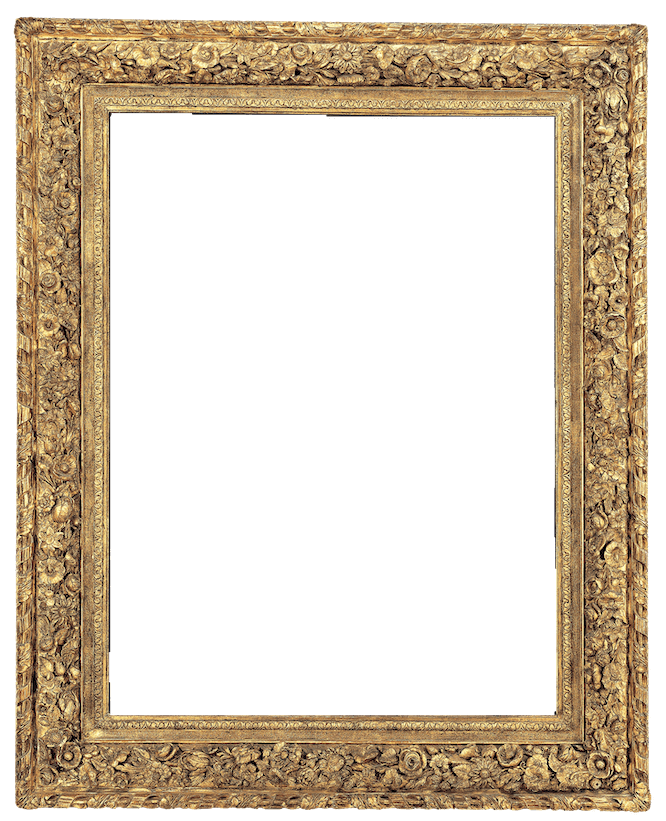

Round about the cauldron go;In the poison'd entrails throw.Toad, that under cold stoneDays and nights has thirty-oneSwelter'd venom sleeping got,Boil thou first i' the charmed pot.Double, double, toil and trouble;Fire burn, and cauldron bubble.Fillet of a fenny snake,In the cauldron boil and bake;Eye of newt and toe of frog,Wool of bat and tongue of dog,Adder's fork and blind-worm's sting,Lizard's leg and howlet's wing,For a charm of powerful trouble,Like a hell-broth boil and bubble.Double, double, toil and trouble;Fire burn, and cauldron bubble.Excerpt of the
Witches Chantfrom
Macbeth
by
William Shakespeare

The Three Witches from Macbeth
by
Daniel Gardner
Frame:
Louis XIII style Ovolo frame